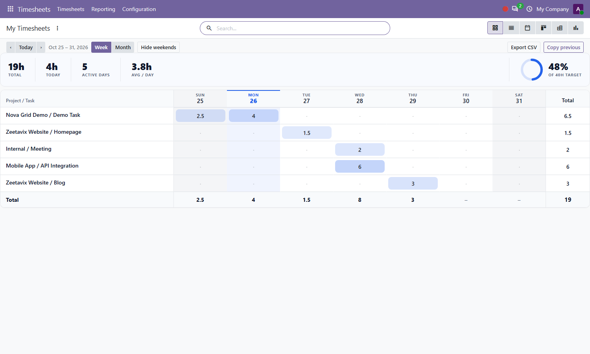
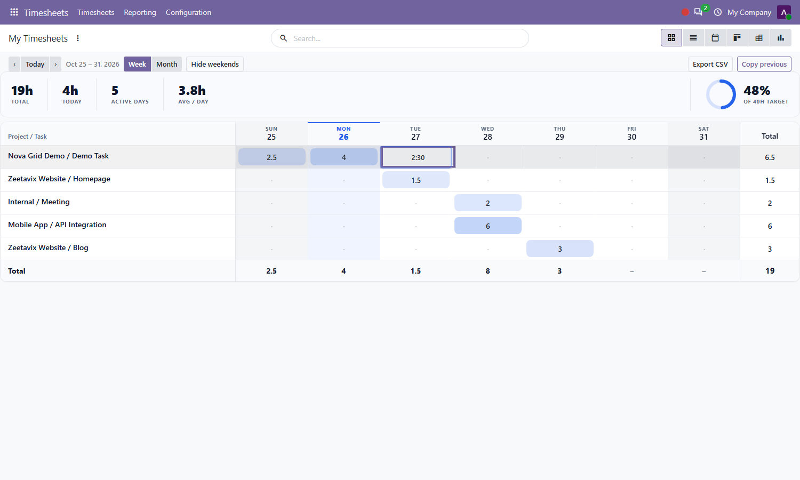
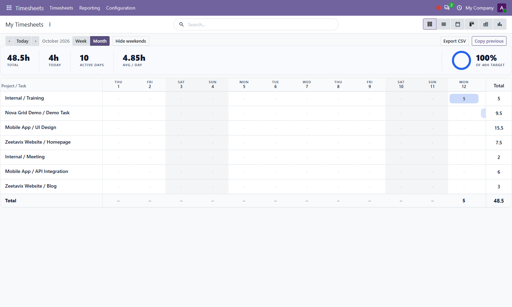
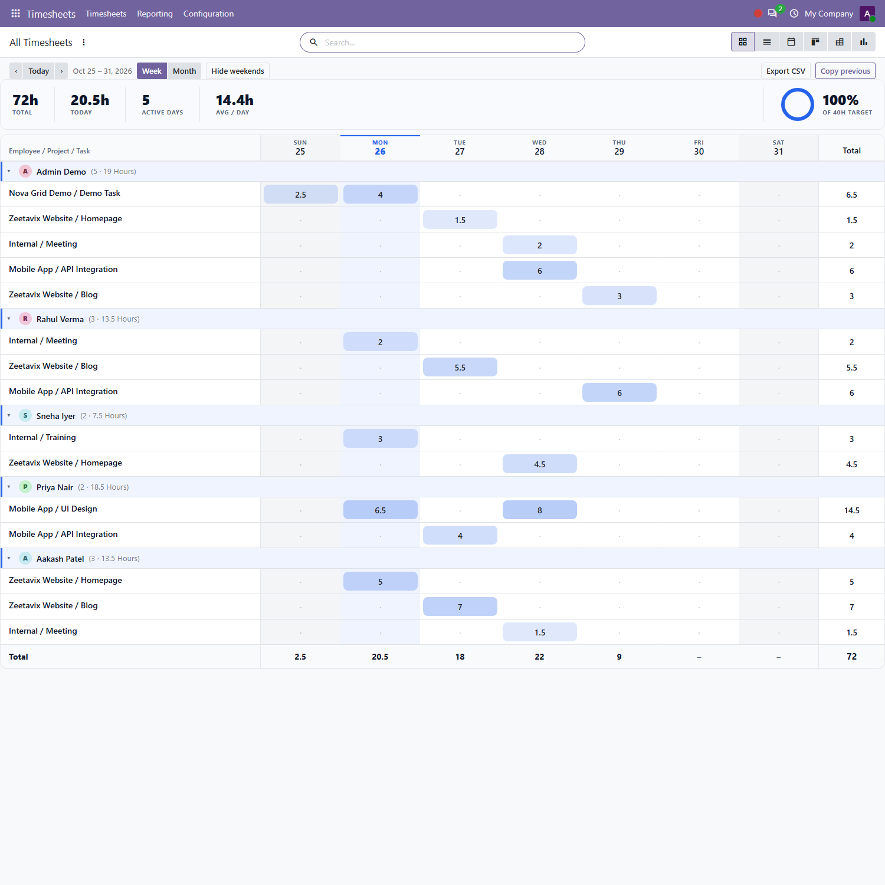
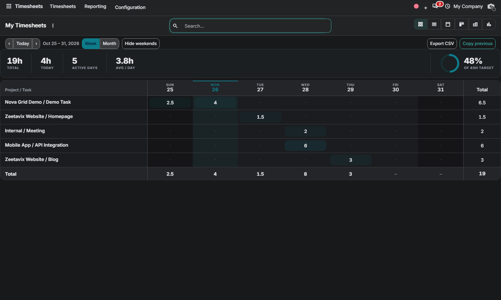

Free Odoo 20.0 Community • By Zeetavix
Nova Timesheet Grid brings the Enterprise-style grid experience to Odoo Community — rebuilt from scratch, with a calmer, denser, more modern interface: inline day editing, heatmap intensity, sticky headers, week/month ranges, weekend toggle, copy-previous-week, CSV export and collapsible employee sections.
Rows are projects/tasks, columns are days. Click any cell, type 1:30 or 1h30, hit Enter — the hours are saved instantly. Empty cells create the line for you.

Keyboard-first: Enter saves and jumps right, Tab / Shift+Tab move across days, Esc cancels. A day can never exceed 24 hours, and placeholders clean themselves up.

One click switches the same grid to a compact 31-day month. Weekends can be hidden, totals always stay in view with a sticky total column.

Managers get collapsible employee sections with avatar chips and line counts, row/column/grand totals, CSV export and one-click Copy previous seeding.

The grid follows your backend theme: elevated header/footer bands, dimmed weekends, damped heat pills and a theme-aware accent — no more white table on a dark page.

Nova Grid (bundled engine, auto-installed dependency) • hr_timesheet • project
By Zeetavix — https://zeetavix.com
Version: 20.0.2.1.0
License: LGPL-3 (free and open source)
Price: Free
Dependencies: nova_grid, hr_timesheet, project
Built for: Odoo 20 Community — no
Enterprise code used or required.
Install: drop the nova_timesheet_grid
folder in your addons path, update the apps list,
install. Installing this module pulls in the nova_grid engine automatically.
Support: support@zeetavix.com — found a bug? open a GitHub issue